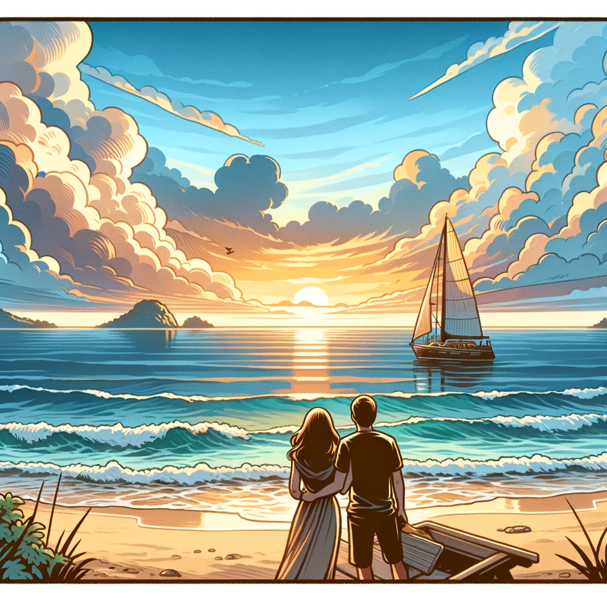
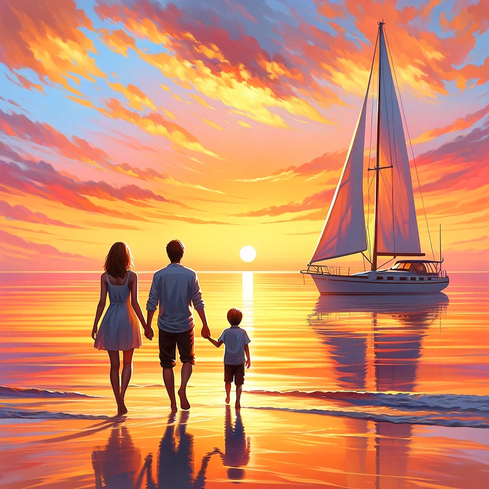

Always

Once upon a time, in a quaint coastal village, there lived a couple, Emma and Leo, who shared a dream larger than the vast ocean they adored.
Their hearts yearned for adventure, for discovery, not just of lands unknown but of the depths within themselves.
So, they decided to embark on a journey to the fabled Isle of Happiness, a place rumored to be the epitome of joy and contentment.
Their vessel was a modest sailboat, christened “Always,” a name that embodied their deepest commitment to each other.
This singular word was a pact, a silent oath that they would forever stand by one another, steadfast through uncertainty and unwavering in the face of adversity.
As they set sail at dawn, the sky painted in hues of hope, they felt a sense of freedom they had never known.
The journey was their canvas, and together, they were the artists.
The ocean, however, was a teacher as much as it was a home to wonders.
It taught them patience as they navigated through calm waters, and resilience as they faced tempests that roared like angered beasts.
In these moments, amid towering waves and howling winds, Emma and Leo found strength in each other.
Leo steered “Always” with unwavering focus and determination, while Emma, with her unyielding spirit, kept their sail poised against the raging storm.
Through each trial, their love deepened, transforming from a fragile flame into a roaring fire.
They learned to communicate without words, to support without asking, and to love without conditions.
Their journey became a dance, a synchronized ballet on the vast, blue stage of the sea.
Days turned into weeks, and the Isle of Happiness began to feel like a distant dream.
But one golden sunrise, as if emerging from the very breath of the ocean, the isle appeared on the horizon.
It was as if the sea had sculpted it from their dreams – lush, vibrant, a haven of peace.

As they stepped onto the isle, they expected to feel an overwhelming sense of arrival, of finality. But as they explored this utopia, they realized something profound. The isle, with all its beauty and serenity, was not the source of their happiness. The joy they sought was not in the destination, but in the journey, they embarked on together. Sitting on the beach, watching the sunset paint the sky with the promise of tomorrow, Emma and Leo understood that their true destination was not a place, but a realization. The Isle of Happiness was merely a mirror, reflecting the love and unity they had forged through their odyssey. With Always anchored in the bay, and with a new recruit on their side, they looked out into the endless ocean, their hearts filled not with a desire to settle but with a longing for new horizons. They realized that their journey did not end with the isle; it was only the beginning. A beginning of a lifetime of adventures, of challenges faced together, and of endless seas of love. And so, with the dawn of a new day, Emma, Leo and their new recruit set sail once again, their spirits unbound, their love as vast as the ocean, ready to embrace the infinite journey that lay ahead. For they knew now that happiness is not a destination to reach, but a journey to be savored, together.
